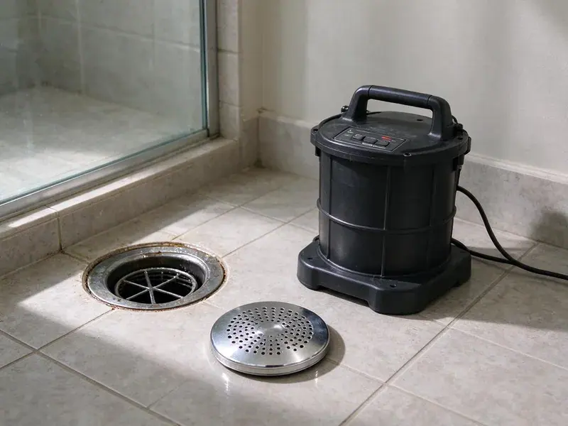

Storm Drain Cleaning in Largo, FL
Heavy downpours in Largo, FL can overwhelm clogged yard drains in minutes. We clear catch basins, pipes and dry wells before the water arrives.
- Licensed Plumbers
- Fast Pre-Storm Scheduling
- Upfront Pricing
- Jetting and Vacuum Removal

Stop Standing Water and Flooded Patios With Storm Drain Cleaning in Largo, FL.
Contact HDF Plumbing today for reliable service and peace of mind.
Reliable Storm Drain Cleaning in Largo, FL
HDF Plumbing specializes in effective storm drain cleaning for homes and businesses across Largo, FL. Our team uses professional equipment to remove debris, leaves, sediment, and other obstructions that can cause serious water accumulation issues.
Our expertise includes:
- Preventative maintenance programs for storm drains
- High-pressure hydro jetting for stubborn blockages
- Camera locating of buried storm lines and outlets

Additional Drain Services Services in Largo, FL
From stubborn kitchen clogs to main sewer backups, our drain services in Largo, FL clear the line and keep it clear with camera-verified results.


Customers
Why Choose HDF Plumbing for Storm Drain Cleaning in Largo, FL?
Storm water that cannot drain finds its way to foundations, garages and patios. Cleaning before the season starts is far cheaper than repairing water damage.
- Outlet Verification, We confirm water exits at the curb, swale or basin as designed.
- Pre-Season Service, We schedule cleanings ahead of storm season so your drains are ready for the first big storm.
- Property Protection, Clear drains protect driveways, walkways, and other exterior structures from erosion and cracking caused by standing water.
Citywide Coverage
We provide complete storm drain cleaning across all residential and commercial areas of Largo. From the busy downtown to quiet suburban streets, our technicians are equipped to handle your drainage needs quickly and efficiently.
Experienced Team
Each technician at HDF Plumbing undergoes thorough training, focusing on the effective and safe cleaning of storm drains. We pride ourselves on having knowledgeable professionals who can accurately diagnose and resolve even the most complex blockages in Largo.
Safety-First Approach
Safety is our top priority, not only for our crew but also for your property and its occupants. All storm drain cleaning is performed in close adherence to local Largo, FL plumbing codes and industry best practices to prevent any damage or hazards.
Trusted Certified Largo Plumbing Services Professionals
At HDF Plumbing, we take pride in providing licensed, certified plumbing services throughout Largo, FL. Backed by recognized industry credentials, our experienced plumbers combine technical skill with genuine customer care. Whether it is repair, installation, or maintenance, we follow strict safety and quality standards to deliver long-lasting results you can trust.
Call Us Now PHCC Plumbing Contractor Recognition
PHCC Plumbing Contractor Recognition Better Business Bureau (BBB) Accreditation
Better Business Bureau (BBB) Accreditation Angi Certified Pro
Angi Certified Pro ISO 9001 Quality Management Certification
ISO 9001 Quality Management CertificationTrusted Storm Drain Cleaning Services in Largo, FL
Emergency Storm Drain Unclogging in Largo
When a severe storm hits Largo and your drains are overflowing, you need fast help. HDF Plumbing provides emergency storm drain unclogging to quickly address critical blockages. We put first urgent calls to minimize water damage to your property, sending rapid response teams with high-powered equipment to restore proper drainage as fast as possible, even during severe weather.

Residential Storm Drain Cleaning in Largo
Homes in Largo are especially vulnerable to storm drain issues due to changing weather and local landscaping. We clear leaves, twigs, silt, and other natural debris that can collect in residential storm drains, preventing rainwater from backing up into yards or foundations. Our service protects your home's perimeter and keeps water moving away from sensitive areas, especially during heavy rain. After a major storm, homes on wells or septic should be checked before normal use, since floodwater can contaminate both systems.
Downspout and Roof Drain Lines in Largo, FL
Many homes connect downspouts to buried pipe that carries water away from the foundation. These lines clog with roof granules, leaves and nests, then back up and dump water at the wall. We jet them clear and test with a hose to verify flow at the outlet. For flat roofs with scuppers, we check that the discharge path is open too. Keeping water away from the slab helps protect against soil movement and settling.
Yard and Area Drain Cleaning in Largo
Yard drains and area inlets collect runoff from lawns, rock landscaping and patios. Over time the grates fill with leaves and the pipes fill with silt and small gravel. We pull the grates, vacuum the inlet box and jet the pipe toward its outlet. This restores the line so it can handle a full storm. We also check that grates are secure and seated.
Preventative Storm Drain Maintenance Plans in Largo, FL
For properties in Largo, FL prone to frequent storm drain issues, HDF Plumbing offers tailored preventative maintenance plans. These plans involve scheduled inspections and cleanings, matched to your property's needs and local conditions. Regular preventative maintenance helps avoid unexpected emergency blockages, lengthens the lifespan of your storm drainage system, and saves you money on costly repairs in the long run. Keep your drains clear year-round with our proactive approach.
Root Removal from Storm Drains in Largo
Tree roots are a common cause of severe storm drain blockages in Largo, especially in older neighborhoods with mature trees. Roots seek out moisture and can infiltrate drain pipes through tiny cracks or loose joints, growing and eventually completely blocking water flow. HDF Plumbing uses specialized root-cutting attachments on our drain snakes and hydro jetting equipment to cut through and remove root intrusions. After removal, we can recommend further steps to prevent future root problems.
Catch Basin Cleaning Services in Largo
Catch basins are key parts of many storm drainage systems in Largo, designed to trap debris before it enters the main pipes. Over time, these basins can fill with leaves, trash, and sediment, reducing their effectiveness. Our service includes thoroughly cleaning out catch basins, removing built-up material so they work correctly and prevent blockages further down the storm drain line, especially important in areas with mature trees.

Storm Drain Video Inspection in Largo
Before and after cleaning, a video inspection is valuable for storm drains in Largo. Our cameras can travel through the drain lines, letting us precisely identify the type and location of blockages, assess pipe integrity, and confirm the results of our cleaning. This technology helps prevent unnecessary digging and ensures a precise solution, especially useful for diagnosing issues hidden underground. Nearly all homes in Florida sit on concrete slabs over sandy soil, so leaks under the slab are a common and costly repair.
Storm Drain Cleaning Near Me in Largo, FL
Looking for storm drain cleaning near me in Largo, FL? HDF Plumbing is your local expert, always ready to respond quickly to your drainage needs. Our teams are based to provide prompt and efficient service across the entire Largo metro area.
When heavy rains hit, a reliable local plumber for storm drain cleaning is essential. HDF Plumbing is dedicated to serving the Largo community with professional, timely service, so your property is protected from water damage caused by clogged drains.
HDF Plumbing at a Glance
- Fully licensed plumbing team covering Largo, FL
- Same-day appointments and 24/7 emergency response
- Clear written estimates, no hidden fees
- 4.9-star rated by 739+ Florida customers
Largo Map
Largo Information
- Population
- 82,248
- Area codes
- 727/813/941
- Service area
- Largo and communities within 40 miles
- Nearby
- Pinellas Park, Clearwater, Palm Harbor, St. Petersburg
Effective storm drain cleaning is important for homes in Largo, FL, where heavy rainfall can quickly overwhelm neglected drainage systems, leading to costly property damage and erosion. Humidity causes condensation on cold lines and clogged AC condensate drains, a common source of hidden water damage.
Expert Services
Trust our professionals for reliable HDF Plumbing solutions in Largo, FL.
Our Specialized Plumbing Services in Largo, FL
At HDF Plumbing, we provide a complete range of plumbing services across Largo, FL. From leak detection to full system installations, our team ensures fast, precise, and affordable service for both residential and commercial properties. Explore our core services below:


How Our Storm Drain Cleaning Process Works in Largo, FL
At HDF Plumbing, we follow a step-by-step approach to deliver effective storm drain cleaning for properties in Largo, FL.
Request a Quote
Contact HDF Plumbing at (904) 925-7356 to describe your storm drain issue and schedule a convenient service appointment. We gather the needed details to prepare for your visit.
On-Site Assessment
Our technician arrives, assesses the storm drain system, and identifies the cause and location of the blockage. We may use camera inspection for accuracy.
Effective Cleaning
We use the right tools, such as hydro jetters or drain snakes, to thoroughly clear the blockage and clean the drain pipes. All debris is removed and disposed of responsibly.
Frequently Asked Questions About Storm Drain Cleaning in Largo
The cost of storm drain cleaning in Largo typically ranges from $200 to $600, depending on the severity and type of blockage, the length of the drain, and the equipment required, such as hydro jetting or snaking. More complex issues like extensive root intrusion or collapsed pipes may cost more. We provide a clear, upfront estimate before starting any work.
Our technicians are trained to service all types and brands of storm drain systems typically found in residential and commercial properties. This includes standard PVC, corrugated HDPE, concrete, and cast iron drainpipes, as well as many types of catch basins and grates from manufacturers like NDS, ADS, and Zurn.
We use a range of professional-grade equipment, including powerful hydro jetting machines that use high-pressure water to scour pipes, drain snakes with various cutting heads for root removal, and waterproof camera inspection systems to accurately diagnose issues and confirm thorough cleaning.
Water pooling around grates, overflowing downspouts, standing water against walls and mud stains near inlets are typical signs.
In Largo, storm drains are commonly clogged by natural debris such as leaves, twigs, dirt, and silt, especially after heavy winds or storms. Other culprits include grass clippings, trash, sediment from construction, and sometimes even tree roots getting into older pipes. Nearly all homes in Florida sit on concrete slabs over sandy soil, so leaks under the slab are a common and costly repair.
We recommend having your storm drains inspected and possibly cleaned once a year, especially if you have mature trees nearby. After a major storm, homes on wells or septic should be checked before normal use, since floodwater can foul both systems. Properties prone to debris buildup or with a history of clogs may benefit from twice-yearly cleaning to prevent major issues.
If our video inspection reveals that your storm drain is damaged, such as collapsed, cracked, or severely invaded by roots, cleaning alone will not solve the problem. We will provide a detailed assessment and discuss repair or replacement options, including trenchless methods where appropriate, for a long-term solution for your Largo property.
We use water jetters, vacuum equipment and push cameras built for drain work. These tools remove debris without damaging thin-wall storm pipe.
What People Are Saying About Our Plumbing Experts?

Robert G.
The trenchless sewer replacement saved our front yard. They walked us through the camera inspection footage first so we knew exactly what we were paying for.
Sewer Line Replacement · Town 'n' Country, FL
Patricia H.
We had a slab leak that two other companies could not find. HDF Plumbing located it in under an hour, explained our options, and the price matched the quote to the dollar.
Slab Leak Repair · Tampa, FL
Laura S.
I scheduled a water heater replacement, and the team made the process smooth and affordable. The new unit works perfectly, and they cleaned up after completing the job.
Water Heater Replacement · Palm Harbor, FLSofia M.
Two new toilets installed in one visit, no mess left behind, and the tech even adjusted a faucet he noticed was dripping. Fair pricing and really friendly.
Toilet Installation · Palm Harbor, FL
Mark T.
When our office needed drain cleaning, HDF Plumbing provided quick, reliable service. The plumber arrived on time and made sure every drain flowed perfectly before leaving. Very satisfied.
Drain Cleaning · Largo, FL
Emily R.
I called HDF Plumbing for plumbing repair, and the technician was fast, polite, and thorough. They explained the problem clearly and fixed it the same day. I will definitely hire them again. Highly recommended!
Plumbing Repair · Largo, FL